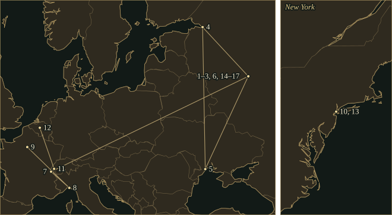

AlexanderScriabin
A pianist who replaced the need for a resolving tonic with recurring harmonic fields, accelerating figures and carefully organised light.
- Trained
- Moscow Conservatory, 1888–92; piano with Vasily Safonov, composition studies with Taneyev and Arensky
- Taught
- Piano at the Moscow Conservatory from 1898; left regular teaching in 1903
- Patrons
- Mitrofan Belyayev; later Serge Koussevitzky, who conducted the premiere of Prometheus
45.1Life
Scriabin was born in Moscow into a family whose musical and military occupations coexisted. His mother, Lyubov, a trained pianist, died while he was an infant; his father’s diplomatic career left much of his upbringing to female relatives. He attended a cadet school while pursuing music, then entered the Moscow Conservatory in 1888. Rachmaninoff was a fellow student. Scriabin studied piano with Vasily Safonov and theoretical subjects with Sergei Taneyev and Anton Arensky, graduating as a pianist in 1892 with the full composition course unfinished. His earliest published music identifies the piano as both instrument and compositional laboratory.
Chopin supplied recognisable genres: prelude, étude, mazurka, nocturne and impromptu. Scriabin’s Twenty-four Preludes, Op. 11, traverse all major and minor keys in the order familiar from Chopin’s Op. 28. The influence extends to melody floating over an independently patterned accompaniment and to chromatic notes that delay a cadence. An injury to his right hand during his student years made the distribution of work between the hands a practical concern. The Prelude and Nocturne for the left hand, Op. 9, create melody, bass and harmonic filling within the reach of one hand.
The pianist in publicBelyayev, teaching and marriage
The publisher and patron Mitrofan Belyayev supported his career and helped bring his music into print and performance. Scriabin’s own playing, preserved on piano rolls, became an important part of his reputation, though rolls cannot preserve every aspect of touch or balance. He married the pianist Vera Isakovich in 1897 and became a piano professor at the Moscow Conservatory in 1898. Teaching provided income but competed with composition and touring. The F♯ minor Piano Concerto, written in 1896, still treats the orchestra and soloist within a recognisable nineteenth-century concerto design; its central movement is a set of variations.
The first three symphonies expanded his ambitions beyond that instrumental model. The First ends with soloists and chorus in praise of art; the Third, The Divine Poem, joins its movements into a sustained progression through conflict, pleasure and assertion. At the piano, the Fourth Sonata of 1903 compresses a comparable trajectory into two linked movements. The slow opening establishes a distant goal in F♯ major; the fast movement repeatedly gathers motion until the earlier material returns at much greater intensity. Register, texture and speed make the relationship audible.
AbroadFrom dominant chords to harmonic fields
Scriabin left regular teaching in 1903 and moved abroad in 1904, living in Switzerland and subsequently elsewhere in Europe. His relationship with Tatiana Schloezer led to separation from Vera; he and Tatiana formed a household, although his first marriage remained legally intact. His reading widened to philosophy and Theosophy, and his conversations increasingly attached cosmological meanings to musical structures. Alongside those associations, a chord with a raised fourth, added sixth and minor seventh has audible interval relationships of its own.
In the middle-period music, dominant-like chords can remain active for long stretches while their expected tonic resolution is postponed. In later works, related sonorities become relatively stable fields from which both melody and accompaniment are drawn. The Fifth Sonata of 1907 retains a key signature while sharply contrasting fragmentary, suspended passages with eruptive motion. The later sonatas abandon key signatures, yet continue to distinguish arrival, preparation and return through register, recurrent motives and the density of figuration.
The Poem of Ecstasy, composed in 1905–08 and first performed in New York under Modest Altschuler in 1908, retains an especially conspicuous role for a solo trumpet. Short ideas accumulate, overlap and return at increased pressure until the final C major assertion. The harmonic language is highly chromatic, but the ending still makes a conventional triad an event. In Prometheus: The Poem of Fire, completed in 1910, the relationship between a recurring six-note collection and its transpositions becomes more systematic. Piano, orchestra, organ and an optional chorus participate in the work; the score also includes a separate part for light.
PrometheusA score for seeing
The clavier à lumières projects colour in response to notated pitches: C is associated with red, D with yellow, and F♯ with blue-violet in the surviving accounts. Two lines move at different rates, one following local harmonic changes and the other much longer divisions. The Moscow premiere in 1911, with Scriabin at the piano and Koussevitzky conducting, omitted the lights because the apparatus was inadequate. Scriabin later annotated a score with further instructions for colour and intensity.
Jean Delville’s design for the published score places Prometheus within a specific Symbolist and Theosophical visual culture. Scriabin’s larger projected Mysterium would have combined music, language, movement, light and other sensory experiences in a collective rite. He developed an introductory project, the Prefatory Action, which survives as a text and musical sketches. These plans proposed a changed relation between participants and artwork.
The late pianoTrills, compression and interruption
Back in Russia, he continued composing and performing. The Ninth and Tenth Sonatas, completed in 1913, concentrate on short figures that change their register, intervallic setting and rate of recurrence. Trills can organise a whole texture. Vers la flamme, written in 1914, begins with widely spaced, relatively static sonorities and progressively replaces their separation with tremulous activity. An infected lesion on his lip led to fatal septicaemia in April 1915. The Mysterium remained unfinished; the late sonatas and short piano pieces show most compactly how precisely he could organise acceleration independently of ordinary tonal cadences.
45.2Places

Read all 17 place records and their sources
- Moscow · 1872-01-06 · born (documented)
Born into a family of musicians and military officers.
Wikipedia: Alexander Scriabin · Wikipedia coordinate records
- Moscow · 1882–1889 · studied (documented)
Attended the Second Moscow Cadet Corps while studying music privately.
Wikipedia: Alexander Scriabin · Wikipedia coordinate records
- Moscow Conservatory · 1888–1892 · studied (documented)
Studied piano with Safonov and theory with Taneyev and Arensky.
- Saint Petersburg · 1894 · travelled (documented)
Made his professional piano debut.
Wikipedia: Alexander Scriabin · Wikipedia coordinate records
- Odesa Ukraine · 1897 · premiere (documented)
Played his Piano Concerto with Safonov conducting. Piano Concerto.
- Moscow Conservatory · 1898–1903 · worked (documented)
Taught piano while composing and performing.
- Geneva · 1904 · lived (documented)
Moved abroad with his family and worked on the Third Symphony. Symphony No. 3, The Divine Poem.
Wikipedia: Alexander Scriabin · Wikipedia coordinate records
- Bogliasco · 1905–1906 · lived (documented)
Lived on the Ligurian coast with Tatiana Schloezer.
- Paris · 1905-05-29 · premiere (documented)
Arthur Nikisch conducted The Divine Poem. Symphony No. 3.
Wikipedia: Alexander Scriabin · Wikipedia coordinate records
- New York City · 1906–1907 · travelled (documented)
Toured the United States as a pianist.
Wikipedia: Alexander Scriabin · Wikipedia coordinate records
- Lausanne · 1907–1908 · lived (documented)
Worked on the Fifth Piano Sonata and The Poem of Ecstasy. Piano Sonata No. 5; The Poem of Ecstasy.
Wikipedia: Alexander Scriabin · Wikipedia coordinate records
- Brussels · 1908–1909 · lived (documented)
Lived in Belgium before returning to Russia.
Wikipedia: Alexander Scriabin · Wikipedia coordinate records
- New York City · 1908-12-10 · premiere (documented)
Modest Altschuler conducted The Poem of Ecstasy. The Poem of Ecstasy.
Wikipedia: Alexander Scriabin · Wikipedia coordinate records
- Moscow · 1909–1915 · lived (documented)
Returned to Russia; his final apartment is now a museum.
Wikipedia: Alexander Scriabin · Wikipedia coordinate records
- Moscow · 1911-03-15 · premiere (documented)
Played the piano part under Koussevitzky; the planned light apparatus was omitted. Prometheus: The Poem of Fire.
Wikipedia: Alexander Scriabin · Wikipedia coordinate records
- Novodevichy Cemetery Moscow · 1915 · buried (documented)
Buried in Novodevichy Cemetery.
- Moscow · 1915-04-27 · died (documented)
Died of septicaemia following an infected lip lesion.
Wikipedia: Alexander Scriabin · Wikipedia coordinate records
Inheritance
Specific encounters, borrowings and transformations. Follow a connection to its evidence.
What came in
What went out
- No sourced connection in this collection yet.
45.3The Sound
How the music is built — harmony, line, rhythm, colour, form.
♯Harmony
Early dominant tensions gradually become stable collections. The six-note “mystic” sonority can furnish both a vertical chord and the notes of a horizontal phrase. It is especially important in Prometheus. The late works also draw on octatonic collections and other pitch relations.
𝅘𝅥Rhythm
Different subdivisions can occupy the same beat in the two hands, loosening the connection between melody and accompaniment while retaining an underlying pulse. Recurrent figures then accelerate or accumulate. The increasing frequency of an event can drive the music to a climax.
𝄞Piano texture
Widely spaced bass notes, a middle-register harmonic layer and a high melodic fragment can behave as separate planes. Pedal connects them acoustically while the notation preserves their different rhythms. In the late sonatas, trills and tremolos increasingly replace sustained lines, making resonance and attack part of the formal argument.
𝄋Form
The early sonatas use several movements; the Fifth through Tenth are single-movement designs. Sonata procedures remain recognisable through contrast, development and return. Recurring texture, register and harmonic collection can mark a recapitulation in place of a conventional restoration of the tonic.
𝄐Orchestra & light
The Poem of Ecstasy sets a projecting trumpet line against a large orchestra. Prometheus adds a piano and a notated visual part whose local changes can clarify transpositions that are difficult to hear. The light part forms a separate organised layer.
45.4Works
A listening path, not a complete catalogue.
- 1888–96Twenty-four PreludesOp. 11PianoAll twenty-four major and minor keys in a Chopin-derived ordering; short pieces already make rhythm and voice-leading disturb their familiar genres.
- 1892–97Piano Sonata No. 2 in G♯ minor “Sonata-Fantasy”Op. 19PianoTwo movements: a sustained Andante and a fast, continuously active Presto. The contrast depends on figuration and register as much as on tempo.
- 1896Piano Concerto in F♯ minorOp. 20Piano and orchestraThree movements, with a central variation set. It provides a useful point of comparison with the later orchestral works in which the piano is no longer a conventional concerto protagonist.
- 1903Piano Sonata No. 4 in F♯ majorOp. 30PianoAn Andante followed without a break by Prestissimo volando; earlier material returns transformed by speed and dynamic force.
- 1905–08The Poem of EcstasyOp. 54Large orchestra with organA single movement with a prominent trumpet idea and a final C major culmination; premiered in New York in 1908.
- 1907Piano Sonata No. 5Op. 53PianoOne movement, sharply alternating suspension and propulsion. Its printed poetic epigraph connects it with the imaginative world of The Poem of Ecstasy.
- 1909–10Prometheus: The Poem of FireOp. 60Piano, large orchestra, organ, optional chorus and colour keyboardPremiered in Moscow in 1911 without the intended lights. The luce staff contains a locally changing line and a much slower layer.
- 1912–13Piano Sonata No. 9Op. 68PianoThe nickname “Black Mass” was not supplied by the composer. Short motives and a gathering march-like motion transform the initial material without a key signature.
- 1912–13Piano Sonata No. 10Op. 70PianoTrills multiply until ornament becomes an organising texture. The single movement repeatedly changes the scale and density of its figuration.
- 1914Vers la flamme (Towards the Flame)Op. 72PianoA compact study in increasing activity: separated sonorities become repeated attacks and tremulous motion.
45.5In the Score
Short examples, engraved and playable. Press play; notes light up as they sound.
Prometheus harmony · schematic voicingsC–F♯–B♭–E–A–D
Piano workshop · schematicThree and five within the same beat
45.6Sister Arts
Paintings and poems that share a world with this music.

Delville’s Prometheus belongs to the Belgian painter’s Symbolist and Theosophical interpretation of the myth: fire becomes an emblem of intellectual and spiritual illumination. Scriabin knew Delville, who designed the published score of Prometheus. A shared intellectual circle and a documented collaboration connect the two artists.

The printed design places the score inside the same esoteric visual culture as Delville’s painting. Separate documents record the colour correspondences of the clavier à lumières. Scriabin’s system orders hues partly through the circle of fifths, while the score’s two light lines distinguish local harmonic change from larger formal spans. Gawboy and Townsend’s study compares Sabaneev’s 1911 table with Scriabin’s own 1913 annotations.
45.7Listen
Recordings worth seeking out.
- The Complete Piano SonatasRuth Laredo, pianoNonesuch · 1970A complete sequence lets the listener follow the change from the early multi-movement sonatas to the compact harmonic and textural procedures of the late works.
- Piano ConcertoVladimir Ashkenazy; London Philharmonic Orchestra, Lorin MaazelDecca · 1971The piano’s melody remains distinct from its accompaniment figures; a useful starting point before the later music loosens that hierarchy.
- The Poem of Ecstasy · PrometheusAnatol Ugorski, piano in Prometheus; Chicago Symphony Orchestra and Chorus, Pierre BoulezDeutsche Grammophon · 1995–96The separate instrumental layers remain audible at the climaxes. An audio recording necessarily leaves the notated light part unrealised.
45.8Lineage
Scriabin’s late harmony offered Russian modernists a route beyond functional tonality different from Schoenberg’s. Roslavets developed his own synthetic-chord procedures. Messiaen’s interest in colour and special pitch collections invites comparison, though his modes and theological framework constitute a distinct system.
Questions to take away
How can a melody sing above a busy accompaniment?
A short étude that asks for weight as well as speed: the right-hand melody is projected in octaves over widely spaced left-hand figures. Listen for the quieter middle and the heavier return of the opening.
Étude in D♯ minor, Op. 8 No. 12 · Patetico
Further reading
- Faubion Bowers, Scriabin: A Biography (Dover, 1996).biography
A biographical account to set beside technical studies of the compositions.
- James M. Baker, The Music of Alexander Scriabin (Yale University Press, 1986).study
A dedicated analytical study of Scriabin’s musical language.
- Anna M. Gawboy and Justin Townsend, ‘Scriabin and the Possible’, Music Theory Online 18, no. 2 (2012).study
Re-examines the surviving light notation for Prometheus and documents a performance that tests its relation to the music.
Cite this page
No publication date is asserted. The access date below is the site build date; replace it with the date you consulted the page.
Chicago
Contrapunctus. “Alexander Scriabin.” Accessed 18 October 2026. https://mottopanikeiku.github.io/contrapunctus/composers/scriabin.html.
BibTeX
@misc{contrapunctus-composers-scriabin,
author = {{Contrapunctus}},
title = {Alexander Scriabin},
howpublished = {\url{https://mottopanikeiku.github.io/contrapunctus/composers/scriabin.html}},
note = {Accessed 2026-10-18}
}